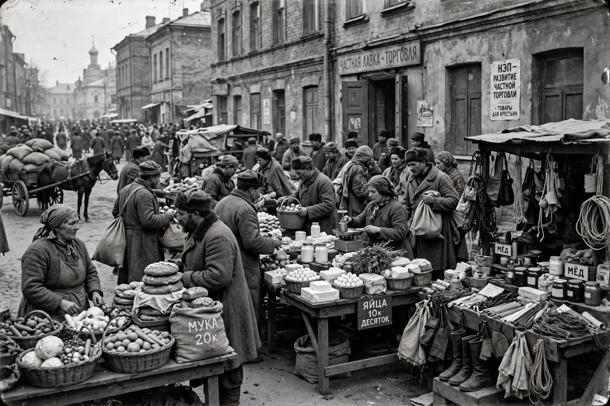

The New Economic Policy (NEP) was an economic policy of the Soviet Union proposed by Vladimir Lenin in 1921 as a temporary retreat from War Communism. It replaced grain requisitioning with a tax in kind, allowed small private enterprise and markets, while the state retained control of large industry, banking and foreign trade — the "commanding heights".

By 1921 civil war, requisitioning and collapse had caused famine and revolts including Kronstadt and Tambov. Lenin argued for a breathing space to restore agriculture and the worker-peasant alliance (smychka).
Peasants could sell surpluses after tax; Nepmen traders and small workshops revived retail; currency was stabilised with the chervonets. Output recovered to pre-war levels by about 1926–27, but unemployment, inequality and the "scissors crisis" between industrial and farm prices fuelled party debate, notably Bukharin versus the Left Opposition.
After Lenin's death, Joseph Stalin abandoned the NEP from 1928 with collectivisation and the First Five-Year Plan.